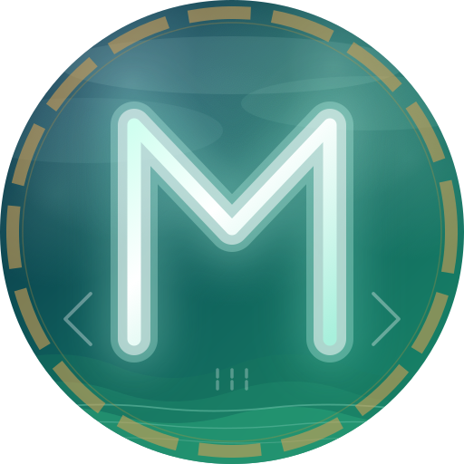
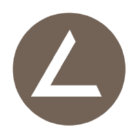

自己紹介
name
たっけん@あすた
jobs
Embedded Engineer.
hobby
Programming, Car Race, Road Bike, VTuber Listening, Camera, Audio, travel, and more...
スキルマップ
C
C++
Asm
C#
Java
Rust
Node.js
TypeScript
Python
Ruby
HTML
成果物

Mryl
自作プログラミング言語
C / C++ / C# / Rust の 4 言語から影響を受けた自作言語。
将来的にはセルフホスティングや自作コンパイラ実現、ネイティブ実行環境の構築を目指しています。
技術スタック: Python, C, Cygwin, GCC
メンバー: たっけん@あすた（個人開発）
Sagiri-NowPlaying
Spotify / SoundCloud 連携アプリ
Spotify / SoundCloud の再生中楽曲を Misskey / Twitter(X) へ投稿できるC# 製アプリ。
再生中の楽曲情報確認やアートワーク表示機能も搭載。
技術スタック: C#(.NET 9), WPF(Prism/ReactiveProperty/Rx), Selenium
メンバー: たっけん@あすた（個人開発）

Legato
AIMP 連携ツール
AIMP4 の再生曲を Twitter へ投稿できるC# 製ラッパーライブラリ。
なうぷれツール等、Legato を使用した派生アプリも開発中。
技術スタック: C#, WinForms, .NET Standard
メンバー: たっけん@あすた, まりはち(@mr8Alice), syuilo(@syuilo)
リンク集